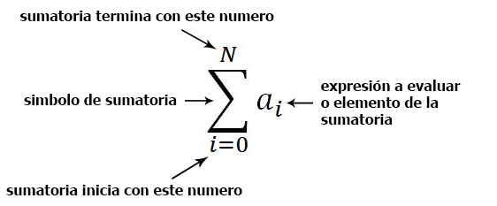

Tablas de frecuencia
Distribución de frecuencias
La distribución de frecuencias o tabla de frecuencias es una ordenación en forma de tabla de los datos estadísticos, asignando a cada dato su frecuencia correspondiente.
Tipos de frecuencias
Frecuencia absoluta
La frecuencia absoluta es el número de veces que aparece un determinado valor en un estudio estadístico.
Se representa por fi.
La suma de las frecuencias absolutas es igual al número total de datos, que se representa por N.
Para indicar resumidamente estas sumas se utiliza la letra griega Σ (sigma mayúscula) que se lee suma o sumatoria.
Frecuencia relativa
La frecuencia relativa es el cociente entre la frecuencia absoluta de un determinado valor y el número total de datos.
Se puede expresar en tantos por ciento y se representa por ni.
La suma de las frecuencias relativas es igual a 1.
Frecuencia acumulada
La frecuencia acumulada es la suma de las frecuencias absolutas de todos los valores inferiores o iguales al valor considerado.
Se representa por Fi.
Frecuencia relativa acumulada
La frecuencia relativa acumulada es el cociente entre la frecuencia acumulada de un determinado valor y el número total de datos. Se puede expresar en tantos por ciento.
Se representa por Ni.
Ejemplo
Durante el mes de julio, en una ciudad se han registrado las siguientes temperaturas máximas:
32, 31, 28, 29, 33, 32, 31, 30, 31, 31, 27, 28, 29, 30, 32, 31, 31, 30, 30, 29, 29, 30, 30, 31, 30, 31, 34, 33, 33, 29, 29.
En la primera columna de la tabla colocamos la variable ordenada de menor a mayor, en la segunda hacemos el recuento y en la tercera anotamos la frecuencia absoluta.
| Xi | Recuento | fi | Fi | ni | Ni |
|---|---|---|---|---|---|
| 27 | I | 1 | 1 | 0.032 | 0.032 |
| 28 | II | 2 | 3 | 0.065 | 0.097 |
| 29 | IIII I | 6 | 9 | 0.194 | 0.290 |
| 30 | IIII II | 7 | 16 | 0.226 | 0.516 |
| 31 | IIII III | 8 | 24 | 0.258 | 0.774 |
| 32 | III | 3 | 27 | 0.097 | 0.871 |
| 33 | III | 3 | 30 | 0.097 | 0.968 |
| 34 | I | 1 | 31 | 0.032 | 1 |
| 31 | 1 |
Este tipo de tablas de frecuencias se utiliza con variables discretas.